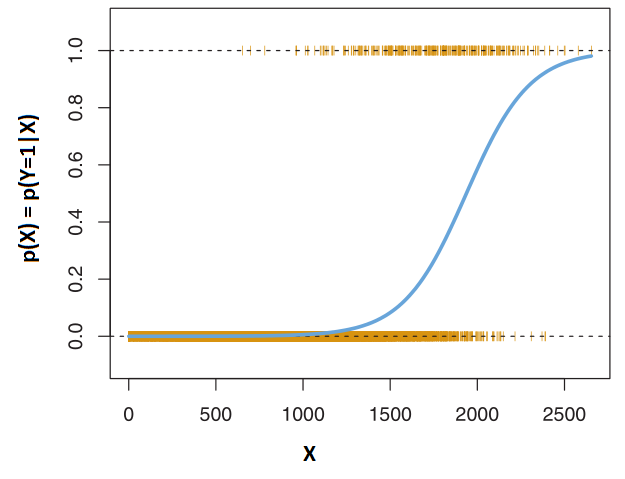
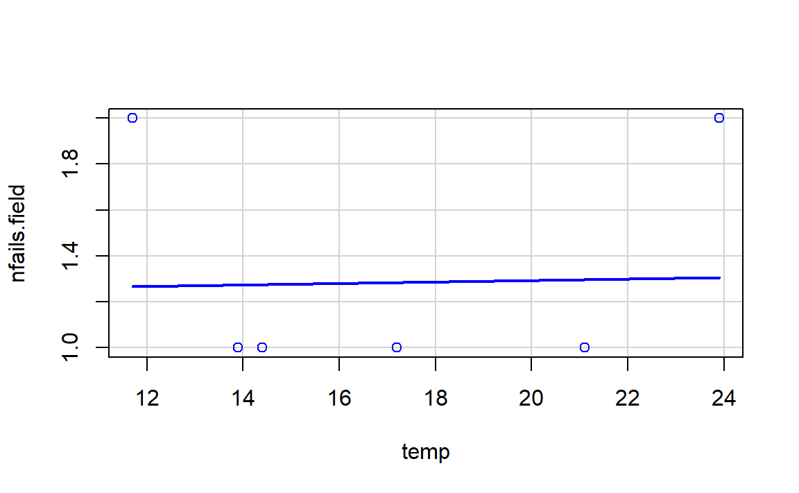
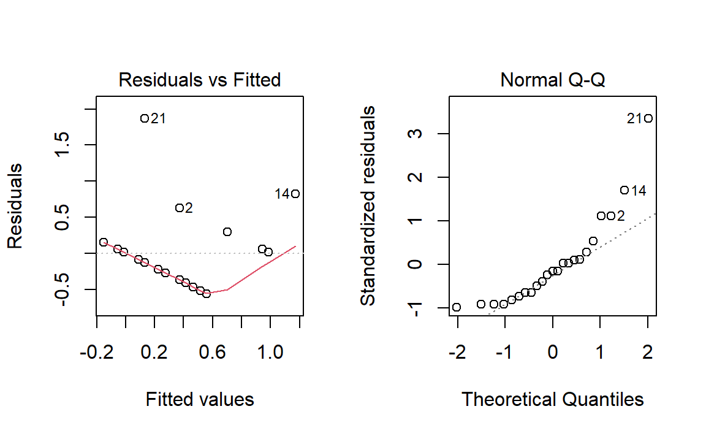
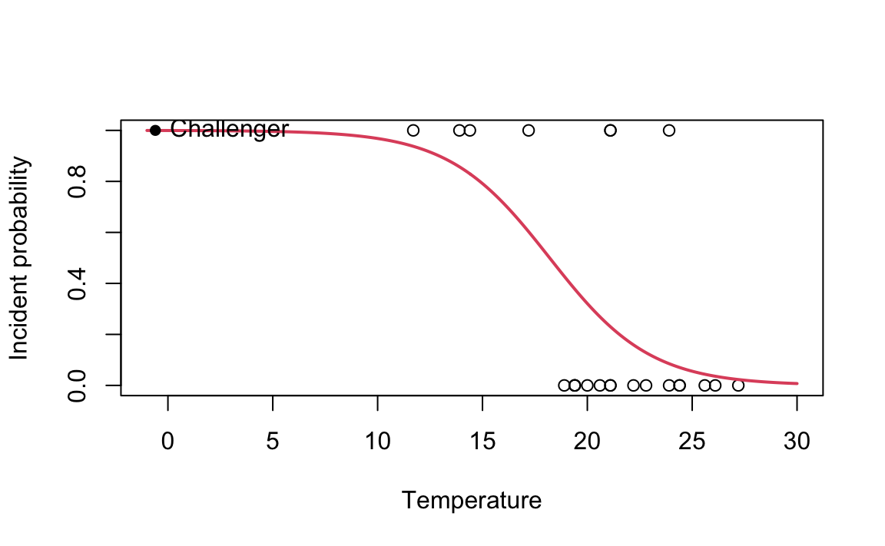

3 Logistic Regression
3.1 Introduction
In the previous chapters we discussed the linear regression model, which assumes that the response variable \(Y\) is quantitative. But in many situations, the response variable is instead qualitative (categorical). For example, eye color is qualitative, taking on values blue, brown, or green.
The process for predicting qualitative responses is known as classification.
Given a feature vector \(X\) and a qualitative response \(Y\) taking values in the set \(\mathcal{C}\), the classification task is to build a function \(C(X)\) that takes as input the feature vector \(X\) and predicts its value for \(Y\); i.e. \(C(X) \in \mathcal{C}\). We are often more interested in estimating the probabilities that \(X\) belongs to each category in \(\mathcal{C}\).
If \(c\) is a category (\(c \in \mathcal{C}\)), by the probability that \(X\) belongs to \(c\) we mean \(p(X \in c) = \mathbb{P}(Y=c|X)\).
In the binomial or binary logistic regression, the outcome can have only two possible types of values (e.g. “Yes” or “No”, “Success” or “Failure”). Multinomial logistic refers to cases where the outcome can have three or more possible types of values (e.g., “good” vs. “very good” vs. “best”). Generally outcome is coded as “0” and “1” in binary logistic regression.
3.2 Logistic Regression
Consider a data set where the response falls into one of two categories, Yes or No. Rather than modeling the response \(Y\) directly, logistic regression models the probability that \(Y\) belongs to a particular category.
3.2.1 The Logistic Model
Let us suppose the response has two categories and we use the generic 0/1 coding for the response. How should we model the relationship between \(p(X) = \mathbb{P}(Y = 1|X)\) and \(X\)?
The simplest situation is when \(Y\) is binary: it can only take two values, codified for convenience as \(1\) (success) and \(0\) (failure).
More formally, a binary variable is known as a Bernoulli variable, which is the simplest non-trivial random variable. We say that \(Y\sim\mathrm{Ber}(p)\), \(0\leq p\leq1\), if \[ Y=\left\{\begin{array}{ll}1,&\text{with probability }p,\\0,&\text{with probability }1-p,\end{array}\right. \] or, equivalently, if \(\mathbb{P}[Y=1]=p\) and \(\mathbb{P}[Y=0]=1-p\), which can be written compactly as \[\begin{aligned} \mathbb{P}[Y=y]=p^y(1-p)^{1-y},\quad y=0,1. \end{aligned}\] Recall that a binomial variable with size \(n\) and probability \(p\), \(\mathrm{Bi}(n,p)\), was obtained by adding \(n\) independent \(\mathrm{Ber}(p)\) (so \(\mathrm{Ber}(p)\) is the same as \(\mathrm{Bi}(1,p)\)).
A Bernoulli variable \(Y\) is completely determined by \(p\). So its mean and variance:
- \(\mathbb{E}[Y]=p\times1+(1-p)\times0=p\)
- \(\mathbb{V}\mathrm{ar}[Y]=p(1-p)\).
In particular, recall that \(\mathbb{P}[Y=1]=\mathbb{E}[Y]=p\).
Assume then that \(Y\) is a binary/Bernoulli variable and that \(X\) are predictors associated to them (no particular assumptions on them). The purpose in logistic regression is to estimate \[ p(x)=\mathbb{P}[Y=1|X=x]=\mathbb{E}[Y|X=x], \] this is, how the probability of \(Y=1\) is changing according to particular values, denoted by \(x\), of the random variables \(X\).
Why not linear regression? A tempting possibility is to consider the model \[ p(x)=\beta_0+\beta_1 x. \] However, such a model will run into problems inevitably: negative probabilities and probabilities larger than one (\(p(x) < 0\) for some values of \(X\) and \(p(X) > 1\) for others). To avoid this problem, the solution is to consider a function to encapsulate the value of \(z=\beta_0+\beta_1 x\), in \(\mathbb{R}\), and map it to \([0,1]\). There are several alternatives to do so, based on distribution functions \(F:\mathbb{R}\longrightarrow[0,1]\) that deliver \(y=F(z)\in[0,1]\). Many functions meet this description. In logistic regression, we use the logistic function,
\[ p(X) = \frac{e^{\beta_0 + \beta_1 X}}{1+e^{\beta_0 + \beta_1 X}} \]
- No matter what values \(\beta_0\), \(\beta_1\) or \(X\) take, \(p(X)\) will have values between 0 and 1.
- The logistic function will always produce an S-shaped curve.
- The logistic distribution function is: \[F(z)=\mathrm{logistic}(z)=\frac{e^z}{1+e^z}=\frac{1}{1+e^{-z}}.\]
After a bit of manipulation of the previous equation, we find that
\[ \frac{p(X)}{1-p(X)} = e^{\beta_0 + \beta_1 X} \]
The quantity \(p(X)/[1−p(X)]\) is called the odds, and can take on any value between \(0\) and \(\infty\).
By taking the logarithm of both sides of the equation, we arrive at
\[ \log( \frac{p(X)}{1-p(X)} ) = \beta_0 + \beta_1 X \]
The left-hand side is called the log-odds or logit. We see that the logistic regression model has a logit that is linear in X.
3.2.2 Estimating the Regression Coefficients
We estimate \(\beta_0\) and \(\beta_1\) using the Maximum Likelihood Estimation method (MLE). The basic intuition behind using maximum likelihood to fit a logistic regression model is as follows: we seek estimates for \(\beta_0\) and \(\beta_1\) such that the predicted probability \(\hat{p}(x_i)\) of the response for each individual, corresponds as closely as possible to the individual’s observed response status (recall that the response \(Y\) is categorical). The likelihood function is
\[ l(\beta_0,\beta_1) = \prod_{i=1}^n p(x_i)^{Y_i}(1-p(x_i))^{1-Y_i}. \]
This likelihood is the probability of the data based on the model. It gives the probability of the observed zeros and ones in the data. The estimates \(\hat{\beta_0}\) and \(\hat{\beta_1}\) are chosen to maximize this likelihood function. The interpretation of the likelihood function is the following:
- \(\prod_{i=1}^n\) appears because the sample elements are assumed to be independent and we are computing the probability of observing the whole sample \((x_{1},y_1),\ldots,(x_{n},y_n)\). This probability is equal to the product of the probabilities of observing each \((x_{i},y_i)\).
- \(p(x_i)^{Y_i}(1-p(x_i))^{1-Y_i}\) is the probability of observing \((x_{i},Y_i)\).
In the linear regression setting, the least squares approach is a special case of maximum likelihood.
We will not give mathematical details about the maximum likelihood and how to estimate the parameters. We will use to fit the logistic regression models (using glm function).
Use the following application (also available here ) to see how the log-likelihood changes with respect to the values for \((\beta_0,\beta_1)\) in three data patterns. The logistic regression fit and its dependence on \(\beta_0\) (horizontal displacement) and \(\beta_1\) (steepness of the curve). Recall the effect of the sign of \(\beta_1\) in the curve: if positive, the logistic curve has an \(s\) form; if negative, the form is a reflected \(s\).
Note that the animation will not be displayed the first time it is browsed (The reason is because it is hosted at https websites with auto-signed SSL certificates). To see it, click on the link above. You will get a warning from your browser saying that “Your connection is not private”. Click in “Advanced” and allow an exception in your browser. The next time the animation will show up correctly.
3.2.3 Prediction
Example
| Coefficient | Std. error | \(Z\)-statistic | p-value | |
|---|---|---|---|---|
| Constant | -10.6513 | 0.3612 | -29.5 | <0.0001 |
| \(X\) | 0.0055 | 0.0002 | 24.9 | <0.0001 |
In this example, \(\hat{\beta_0} = -10.6513\) and \(\hat{\beta_1} = 0.0055\). It produces the blue curve that separates that data in the following figure,

As for prediction, we use the model built with the estimated parameters to predict probabilities. For example,
If \(X=1000\),
\[ \hat{p}(X) = \frac{e^{\hat{\beta_0} + \hat{\beta_1} X}}{1+e^{\hat{\beta_0} + \hat{\beta_1} X}} = \frac{e^{-10.6513+0.0055 \times 1000}}{1+e^{-10.6513+0.0055 \times 1000}} = 0.006\]
If \(X=2000\),
\[ \hat{p}(X) = \frac{e^{\hat{\beta_0} + \hat{\beta_1} X}}{1+e^{\hat{\beta_0} + \hat{\beta_1} X}} = \frac{e^{-10.6513+0.0055 \times 2000}}{1+e^{-10.6513+0.0055 \times 2000}} = 0.586\]
3.3 Multiple Logistic Regression
We now consider the problem of predicting a binary response using multiple predictors. By analogy with the extension from simple to multiple linear regression in the previous chapters, we can generalize the simple logistic regression equation as follows:
\[ \log( \frac{p(X)}{1-p(X)} ) = \beta_0 + \beta_1 X_1 + \ldots + \beta_p X_p\]
where \(X=(X_1,\ldots,X_p)\) are \(p\) predictors. The equation above can be rewritten as
\[ p(X) = \frac{e^{\beta_0 + \beta_1 X_1 + \ldots + \beta_p X_p}}{1+e^{\beta_0 + \beta_1 X_1 + \ldots + \beta_p X_p}} \]
Just as in the simple logistic regression we use the maximum likelihood method to estimate \(\beta_0,\beta_1,\ldots,\beta_p\).
3.4 Example
3.4.1 Case study: The Challenger disaster
The Challenger disaster occurred on the 28th January of 1986, when the NASA Space Shuttle orbiter Challenger broke apart and disintegrated at 73 seconds into its flight, leading to the deaths of its seven crew members. The accident deeply shocked the US society, in part due to the attention the mission had received because of the presence of Christa McAuliffe, who would have been the first astronaut-teacher. Because of this, NASA TV broadcasted live the launch to US public schools, which resulted in millions of school children witnessing the accident. The accident had serious consequences for the NASA credibility and resulted in an interruption of 32 months in the shuttle program. The Presidential Rogers Commission (formed by astronaut Neil A. Armstrong and Nobel laureate Richard P. Feynman, among others) was created to investigate the disaster.
Figure 3.1: Challenger launch and posterior explosion, as broadcasted live by NBC in 28/01/1986.
The Rogers Commission elaborated a report (Presidential Commission on the Space Shuttle Challenger Accident 1986) with all the findings. The commission determined that the disintegration began with the failure of an O-ring seal in the solid rocket motor due to the unusual cold temperatures (-0.6 Celsius degrees) during the launch. This failure produced a breach of burning gas through the solid rocket motor that compromised the whole shuttle structure, resulting in its disintegration due to the extreme aerodynamic forces. The problematic with O-rings was something known: the night before the launch, there was a three-hour teleconference between motor engineers and NASA management, discussing the effect of low temperature forecasted for the launch on the O-ring performance. The conclusion, influenced by Figure 3.2a, was:
“Temperature data [are] not conclusive on predicting primary O-ring blowby.”

Figure 3.2: Number of incidents in the O-rings (filed joints) versus temperatures. Panel a includes only flights with incidents. Panel b contains all flights (with and without incidents).
The Rogers Commission noted a major flaw in Figure 3.2a: the flights with zero incidents were excluded from the plot because it was felt that these flights did not contribute any information about the temperature effect (Figure 3.2b). The Rogers Commission concluded:
“A careful analysis of the flight history of O-ring performance would have revealed the correlation of O-ring damage in low temperature”.
The purpose of this case study, inspired by Dalal, Fowlkes, and Hoadley (1989), is to quantify what was the influence of the temperature in the probability of having at least one incident related with the O-rings. Specifically, we want to address the following questions:
- Q1. Is the temperature associated with O-ring incidents?
- Q2. In which way was the temperature affecting the probability of O-ring incidents?
- Q3. What was the predicted probability of an incidient in an O-ring for the temperature of the launch day?
To try to answer these questions we have the challenger ( dataset ). The dataset contains (as shown in the table below) information regarding the state of the solid rocket boosters after launch12 for 23 flights. Each row has, among others, the following variables:
fail.field,fail.nozzle: binary variables indicating whether there was an incident with the O-rings in the field joints or in the nozzles of the solid rocket boosters.1codifies an incident and0its absence. On the analysis, we focus on the O-rings of the field joint as being the most determinants for the accident.temp: temperature in the day of launch. Measured in Celsius degrees.pres.field,pres.nozzle: leak-check pressure tests of the O-rings. These tests assured that the rings would seal the joint.
| flight | date | fail.field | fail.nozzle | temp |
|---|---|---|---|---|
| 1 | 12/04/81 | 0 | 0 | 18.9 |
| 2 | 12/11/81 | 1 | 0 | 21.1 |
| 3 | 22/03/82 | 0 | 0 | 20.6 |
| 5 | 11/11/82 | 0 | 0 | 20.0 |
| 6 | 04/04/83 | 0 | 1 | 19.4 |
| 7 | 18/06/83 | 0 | 0 | 22.2 |
| 8 | 30/08/83 | 0 | 0 | 22.8 |
| 9 | 28/11/83 | 0 | 0 | 21.1 |
| 41-B | 03/02/84 | 1 | 1 | 13.9 |
| 41-C | 06/04/84 | 1 | 1 | 17.2 |
| 41-D | 30/08/84 | 1 | 1 | 21.1 |
| 41-G | 05/10/84 | 0 | 0 | 25.6 |
| 51-A | 08/11/84 | 0 | 0 | 19.4 |
| 51-C | 24/01/85 | 1 | 1 | 11.7 |
| 51-D | 12/04/85 | 0 | 1 | 19.4 |
| 51-B | 29/04/85 | 0 | 1 | 23.9 |
| 51-G | 17/06/85 | 0 | 1 | 21.1 |
| 51-F | 29/07/85 | 0 | 0 | 27.2 |
| 51-I | 27/08/85 | 0 | 0 | 24.4 |
| 51-J | 03/10/85 | 0 | 0 | 26.1 |
| 61-A | 30/10/85 | 1 | 0 | 23.9 |
| 61-B | 26/11/85 | 0 | 1 | 24.4 |
| 61-C | 12/01/86 | 1 | 1 | 14.4 |
Let’s begin the analysis by replicating Figures 3.2a and 3.2b and checking that linear regression is not the right tool for answering Q1–Q3. For that, we make two scatterplots of nfails.field (number of total incidents in the field joints) in function of temp, the first one excluding the launches without incidents (subset = nfails.field > 0) and the second one for all the data.
require(car)
scatterplot(nfails.field ~ temp, reg.line = lm, smooth = FALSE, spread = FALSE,
boxplots = FALSE, data = challenger, subset = nfails.field > 0)
scatterplot(nfails.field ~ temp, reg.line = lm, smooth = FALSE, spread = FALSE,
boxplots = FALSE, data = challenger)
There is a fundamental problem in using linear regression for this data: the response is not continuous. As a consequence, there is no linearity and the errors around the mean are not normal (indeed, they are strongly non normal). We can check this with the corresponding diagnostic plots:

Although linear regression is not the adequate tool for this data, it is able to detect the obvious difference between the two plots:
- The trend for launches with incidents is flat, hence suggesting there is no dependence on the temperature (Figure 3.2a). This was one of the arguments behind NASA’s decision of launching the rocket at a temperature of -0.6 degrees.
- However, the trend for all launches indicates a clear negative dependence between temperature and number of incidents! (Figure 3.2b). Think about it in this way: the minimum temperature for a launch without incidents ever recorded was above 18 degrees, and the Challenger was launched at -0.6 without clearly knowing the effects of such low temperatures.
Instead of trying to predict the number of incidents, we will concentrate on modeling the probability of expecting at least one incident given the temperature, a simpler but also revealing approach. In other words, we look to estimate the following curve:
\[
p(x)=\mathbb{P}(\text{incident}=1|\text{temperature}=x)
\]
from fail.field and temp. This probability can not be properly modeled as a linear function like \(\beta_0+\beta_1x\), since inevitably will fall outside \([0,1]\) for some value of \(x\) (some will have negative probabilities or probabilities larger than one). The technique that solves this problem is the logistic regression.
The logistic model in this case is
\[
\mathbb{P}(\text{incident}=1|\text{temperature}=x)=\text{logistic}\left(\beta_0+\beta_1x\right)=\frac{1}{1+e^{-(\beta_0+\beta_1x)}},
\]
with \(\beta_0\) and \(\beta_1\) unknown.
Let’s fit the model to the data by estimating \(\beta_0\) and \(\beta_1\).
nasa <- glm(fail.field ~ temp, family = "binomial", data = challenger)
summary(nasa)
#ans>
#ans> Call:
#ans> glm(formula = fail.field ~ temp, family = "binomial", data = challenger)
#ans>
#ans> Deviance Residuals:
#ans> Min 1Q Median 3Q Max
#ans> -1.057 -0.757 -0.382 0.457 2.220
#ans>
#ans> Coefficients:
#ans> Estimate Std. Error z value Pr(>|z|)
#ans> (Intercept) 7.584 3.915 1.94 0.053 .
#ans> temp -0.417 0.194 -2.15 0.032 *
#ans> ---
#ans> Signif. codes: 0 '***' 0.001 '**' 0.01 '*' 0.05 '.' 0.1 ' ' 1
#ans>
#ans> (Dispersion parameter for binomial family taken to be 1)
#ans>
#ans> Null deviance: 28.267 on 22 degrees of freedom
#ans> Residual deviance: 20.335 on 21 degrees of freedom
#ans> AIC: 24.33
#ans>
#ans> Number of Fisher Scoring iterations: 5
exp(coef(nasa)) # Exponentiated coefficients ("odds ratios")
#ans> (Intercept) temp
#ans> 1965.974 0.659
The glm() function fits generalized linear models, a class of models that includes logistic regression. The syntax of the glm() function is similar to that of lm(), except that we must pass in the argument family=binomial in order to tell to run a logistic regression rather than some other type of generalized linear model.
The summary of the logistic model is notably different from the linear regression, as the methodology behind is quite different. Nevertheless, we have tests for the significance of each coefficient. Here we obtain that temp is significantly different from zero, at least at a level \(\alpha=0.05\). Therefore we can conclude that the temperature is indeed affecting the probability of an incident with the O-rings (answers Q1).
The coefficient of temp, \(\hat\beta_1\), can be regarded the “correlation between the temperature and the probability of having at least one incident”. This correlation, as evidenced by the sign of \(\hat\beta_1\), is negative. Let’s plot the fitted logistic curve to see that indeed the probability of incident and temperature are negatively correlated:
# Plot data
plot(challenger$temp, challenger$fail.field, xlim = c(-1, 30), xlab = "Temperature",
ylab = "Incident probability")
# Draw the fitted logistic curve
x <- seq(-1, 30, l = 200)
y <- exp(-(nasa$coefficients[1] + nasa$coefficients[2] * x))
y <- 1 / (1 + y)
lines(x, y, col = 2, lwd = 2)
# The Challenger
points(-0.6, 1, pch = 16)
text(-0.6, 1, labels = "Challenger", pos = 4) At the sight of this curve and the summary of the model we can conclude that the temperature was increasing the probability of an O-ring incident (Q2). Indeed, the confidence intervals for the coefficients show a significative negative correlation at level \(\alpha=0.05\):
confint(nasa, level = 0.95)
#ans> 2.5 % 97.5 %
#ans> (Intercept) 1.336 17.783
#ans> temp -0.924 -0.109Finally, the probability of having at least one incident with the O-rings in the launch day was \(0.9996\) according to the fitted logistic model (Q3). This is easily obtained:
Be aware that type = "response" has a different meaning in logistic regression. In linear models it returns a CI for the prediction. But, type = "response" means that the probability should be returned, instead of the value of the link function, which is returned with type = "link" (the default).
Recall that there is a serious problem of extrapolation in the prediction, which makes it less precise (or more variable). But this extrapolation, together with the evidences raised by a simple analysis like we did, should have been strong arguments for postponing the launch.
◼
References
Dalal, Siddhartha R., Edward B. Fowlkes, and Bruce Hoadley. 1989. “Risk Analysis of the Space Shuttle: Pre-Challenger Prediction of Failure.” Journal of the American Statistical Association 84 (408): 945–57. https://doi.org/10.1080/01621459.1989.10478858.
Presidential Commission on the Space Shuttle Challenger Accident. 1986. Report of the Presidential Commission on the Space Shuttle Challenger Accident (Vols. 1 & 2). Washington, DC. http://history.nasa.gov/rogersrep/genindex.htm.
After the shuttle exits the atmosphere, the solid rocket boosters separate and descend to land using a parachute where they are carefully analyzed.↩